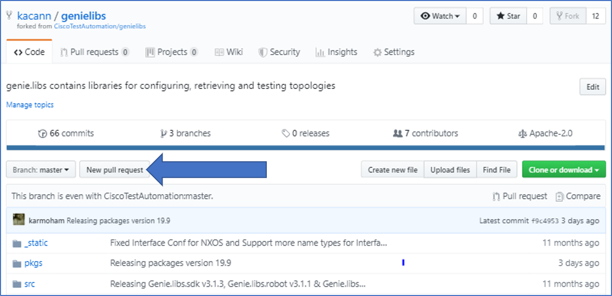

Contribution guidelines
We strongly encourage everyone to contribute to the pyATS community. The more our users contribute to the pool of feature libraries and components, the more varied, scalable, and robust the pyATS Library becomes. This saves you time and effort when you set up your own network automation.
Helping with documentation issues
If you look at the Github issue tracker (eg. pyats, genie, etc.), you will find various documentation problems that may need work. Issues vary from typos to unclear documentation and items lacking documentation, etc.
If you see a documentation issue that you would like to tackle, you can:
check to see if there is already an assignee to it, if not, go for it!
assign yourself to that issue.
leave a comment on the issue, mentioning the estimated time you will take to tackle the issue.
submit a pull request for the issue.
Help proofreading documentation
While an issue filed on the issue tracker means there is a known issue somewhere, that does not mean that we have found all the issues. Proofreading is also an important part of the documentation.
- Here are a few examples that could be great pull requests for proofreading:
Fix Typos
Better wording, easier explanation
More details, examples
Anything else to enhance the documentation.
- Proofreading workflow:
read a section of the documentation from start to finish
filing issues in the issue tracker for each major type of problem you find.
Simple typos don’t require issues of their own, but, instead, submit a pull request directly.
Try not to file a single issue for an entire section containing multiple problems. Break the issue down, and file several issues. Making it easier to divide the work up for multiple people to perform more efficient review.
Helping with source code
We offer the pyATS Library feature libraries and components as open-source code, and we welcome your contributions to any of the following packages:
Package |
Description |
|---|---|
Conf |
Configuration library |
Ops |
Operational state library |
Robot |
These libraries support the Robot Framework. |
SDK |
These libraries and datafiles define the test cases (Triggers and Verifications), API functions, and parsers. |
Check the existing components
Before you begin this process, check to see if an existing conf or ops structure, Trigger, or Parser meets your requirements. On the pyATS Library GitHub site, look at /genielibs/pkgs/<name>-pkg/src/genie/libs/<name>/, where <name> is the component that you want to check.
If you need to create a new feature within the
conforopspackages, follow the conf or ops guidelines.If you want to write a new trigger, check to see if an existing trigger exists for the same action (such as ShutNoshut, ConfigUnconfig). Check by feature (such as BGP or OSPF) at /genielibs/pkgs/sdk-pkg/src/genie/libs/sdk/triggers
For verifications (parsers), check by OS and show command at genieparser/src/genie/libs/parser
Clone the source code repository
GitHub basics
You need to know a few basic GitHub commands and processes to download, change, and upload a feature library or component.
Note
Internal Cisco developers and engineers use Cisco Internal GitHub to commit changes. The pyATS Library team synchronizes the Cisco Internal GitHub and GitHub repos as part of each monthly release.
In GitHub, branches separate different versions of the same repository (repo), so that more than one person can make changes at the same time. We use the following:
master branch — contains code that is already released or ready to be released.
dev branch — (Cisco Internal GitHub only) contains code that is stable, reviewed, and ready to release.
fork — contains a complete copy of the original repository. This is what you use to make your changes.
Clone the repo
Do you have a GitHub account?
If yes, go to the next step.
If no, go to https://github.com/join and create your account.
Find the repository for the component that you want to add or extend.
Repository locations Item
Repository to clone
Path to specific items
Trigger
Parser
Ops package
Conf package
Robot Framework
Functions (APIs)
Other
Fork a repository (see https://help.github.com/en/articles/fork-a-repo).
On GitHub (DevNet users), fork off of the master branch.
On Cisco Internal GitHub (internal Cisco users), fork off of the dev branch.
Result: This step creates a copy of the repository that you can work on without affecting anyone else’s work.
Clone the repository:
git clone repo_name
where repo_name is the name of the repository you want to work on.
Note
For internal Cisco users on Cisco Internal GitHub, make sure you are on the dev branch of the repo when you clone it.
Write new code
After you clone the repo from GitHub (DevNet) or Cisco Internal GitHub (Cisco internal), you can activate the develop mode, make your changes, and request approval (open a pull request).
As a guide, follow the PEP 8 – Style Guide for Python Code. Note the following items:
PEP 8 naming conventions
80-character limit per line
Two blank lines between classes, two lines between functions, and one line between methods
Write the imports in the following order:
Python native libraries
Third-party libraries
pyATS Library modules
Tools to check your code
You can use the following tools to check the PEP 8 and style conventions.
Tool |
Installation |
Execution |
|---|---|---|
pep8 |
pip install pep8 |
pep8 myfile |
pylint |
pip install pylint |
pylint myfile |
Conf or Ops packages
Move to directory where repository is cloned:
cd genielibs
Activate the “develop” mode:
make develop
Result: The system installs dependencies and packages, and sets up the development environment for the
conf,ops,robot,sdk,health,cleanandfiletransferutilspackages.
Write your own code as required.
See the following topics for details about how to:
Parsers
Move to directory where repository is cloned:
cd genieparser
Activate the “develop” mode:
make develop
Result: The system installs dependencies and packages, and sets up the development environment for the
parserpackage.
See detailed steps for writing and testing a parser in the topic Write a parser.
Run unit tests
Important
You must run unit tests on all new code.
Your changes must not break existing unit tests.
You must include the test results when you open a pull request.
Internal Cisco users
Install cisco-distutils:
pip install cisco-distutils
For
conf, change to the conf/tests directory,cd genielibs/src/conf/tests/
and run all of the
conftests:runAllResult: The system displays the test results.
For
ops, change to the ops/tests directory,cd genielibs/src/ops/tests/
and run all of the
opstests:runAllResult: The system displays the test results.
For parsers, see the section Testing your parser.
Did all of the tests pass?
If yes, you can now update the changelogs.
If no, check the errors, fix your code, and try again.
External DevNet users
For
conf, change to the conf/tests directory,cd genielibs/src/conf/tests/
and run all of the
conftests:python -m unittest discover
Result: The system displays any failed tests and the number of tests run.
For
ops, change to the ops/tests directory,cd genielibs/src/ops/tests/
and run all of the
opstests:python -m unittest discover
Result: The system displays any failed tests and the number of tests run.
For parsers, see the section Testing your parser.
Did all of the tests pass?
If yes, you can now update the changelogs.
If no, check the errors, re-write your code, and try again.
Update the changelog
We use changelogs for each package (changelog/undistributed/) to track new features, updates and fixes.
Create a new changelog file in
changelog/undistributed/. The genieparser repo README explains how in the how to write changelog section.
You can either edit the file directly, or change it locally and then commit your changes.
Making good commits
After you have successfully run all of the unit tests and updated the relevant changelogs, you can commit and push your changes.
Commit policy
If you commit all of your changes at once, include only one feature or one bug fix in a single commit. For example, 1 commit = 1 parser (not more than one).
It’s okay to commit one small change at a time, but wait until you complete your changes before you open a pull request.
Write a useful and descriptive message for each commit.
Commit your changes
Note
It’s okay to commit (but not push) your changes before you open a pull request. This helps you to track the changes you’ve made and to revert any changes, if necessary.
Commit procedure
Did you add any new files?
If yes, use a git command to add them:
git add <filename>
If no, go to the next step.
Commit your changes and include a descriptive message. You can commit all of your changes at once,
git commit -a -m 'My descriptive message.'
or “stage” each change as you make it,
git add mod1 git add mod2
and then commit all of the changes:
git commit -m 'My descriptive message.'
When you have committed all of your changes, you can “push” them to your fork.
Internal Cisco users – dev branch in Cisco Internal GitHub:
git push origin dev
External DevNet users – master branch in GitHub:
git push origin master
Making good pull request
Before submitting your pull request (PR), there are several things to be considered:
Make sure to follow the PEP 8 – Style Guide for Python Code
Think about backward-compatibility, make sure your changes do not break other’s code. (see PEP 387
Please ensure that you have added proper tests to verify your changes work as expected.
Run the entire test suite and making sure all tests passed.
Remember to update the changelog file for your changes.
Open a pull request
Open a pull request when you want the pyATS Library team to review your code and merge it into the main repository.
From a web browser, go to your fork in the relevant repo.
Select New pull request.
On the page where you compare changes, select the base repository and branch that you want to merge into.
Internal Cisco users – select the dev branch.
External DevNet users – select the master branch.
Select your fork as the head repository, and then select the compare branch that you worked on.
Drag and drop screen captures of your unit tests into the description box. For detailed information, see the GitHub help page.
Select Create pull request.
Result: The pyATS Library team receives a notification to review the request.
See also…